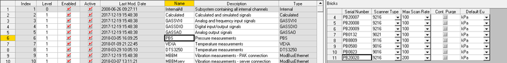

How To – Add a New PBS Pressure Scanner
This How To describes the required steps to add a new PBS pressure scanner to the proDAS system.
When a new PBS scanner is being added to the proDAS system, the IP address for the scanner needs to be entered in the Linux PC hosts file, and the MAC address for the scanner needs to be entered in the Linux PC ethers file.
To Add a New PBS Pressure Scanner
- Login to the Linux PC as the root user and use a text editor (nedit, gedit or vi) to open the /etc/hosts file for editing.
- Scroll down in the file to where the Real-Time Network IP addresses are defined.
- Search for any previously defined PBS scanners.
Normally the host name for a PBS scanner has the following naming convention: PB<serial_number>
If the serial number for the PBS scanner is 20020, then the host name would be entered as PB20020. A previously unused IP address must be allocated to the scanner.
- Review the currently allocated IP addresses in the hosts file for all the devices on the Real-Time Network and select one that is not assigned to any device.
-
Using an example of an unallocated IP address of 172.29.18.39, the following line would be added to the /etc/hosts file in the same location where the previously defined PBS scanners are found:
172.29.18.39 PB20020
-
Save the /etc/hosts file and open the /etc/ethers file for editing.
The faceplate on the PBS scanner will include the MAC address information. This information needs to be copied into the ethers file and associated with the host name previously entered in the /etc/hosts file. If the MAC address for the scanner with serial number 20020 is 00:E0:8D:10:4E:34 the following line would be added to the /etc/ethers file:
00:E0:8D:10:4E:34 PB20020.
- Make sure that the PBS scanner host name entered in the ethers file matches the host name entered in the hosts file.
- Save the /etc/ethers file.
An additional step is required for 9216 pressure scanners, as they use DHCP to obtain their IP address. If the scanner being added is not a 9216 pressure scanner, logout of the Linux PC.
- For a 9216 pressure scanner, open the /etc/dhcpd.conf file for editing.
- A new entry needs to be added in this configuration file to identify the MAC address and IP address of the pressure scanner for the DHCP server. In the case of a pressure scanner with serial number 20020 and a MAC address of 00:E0:8D:10:4E:34, the following lines would be added to the /etc/dhcpd.conf file:
host PB20020 {
hardware ethernet 00:E0:8D:10:4E:34;
fixed-address 172.29.18.39;
}
- Save the /etc/dhcpd.conf file and logout of the Linux PC.
- On the MgtGUI PC, launch an instance of the Subsystem Editor.
- Select the PBS Subsystem. A list of the currently defined PBS scanners is displayed on the right-hand side.
- Right-click on the right-hand side and select the Append option to add a new scanner.
- In the Serial Number field, enter the host name that was entered in the /etc/hosts file.
- Enter the remaining information based on the type of scanner that is being added: scanner type, maximum scan rate, continuous purge enabled and, default EU.

- Continue and add the Ports information for this new scanner.
- Save the changes in the Subsystem Editor. You can now add PBS channels in the Channel Editor and assign them to this new PBS scanner.